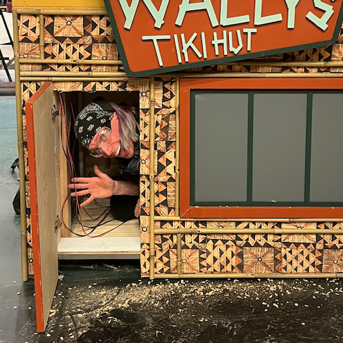
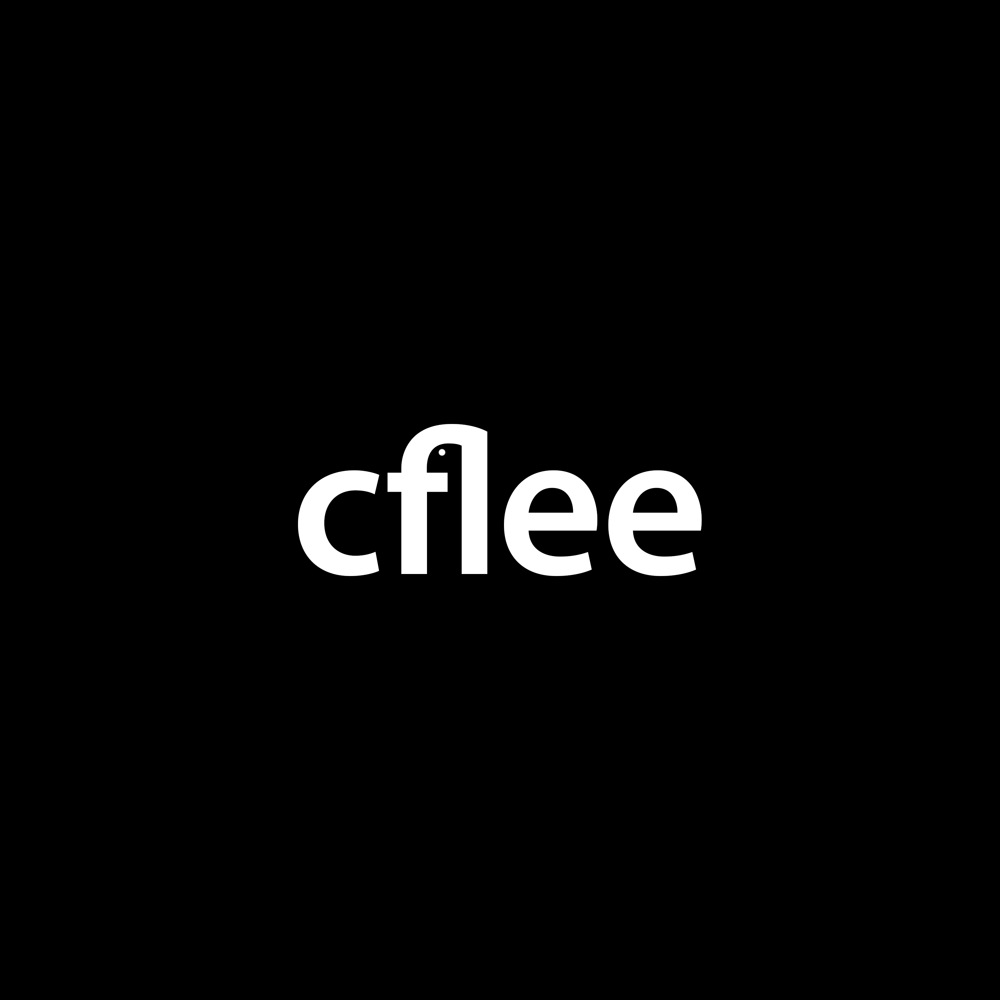
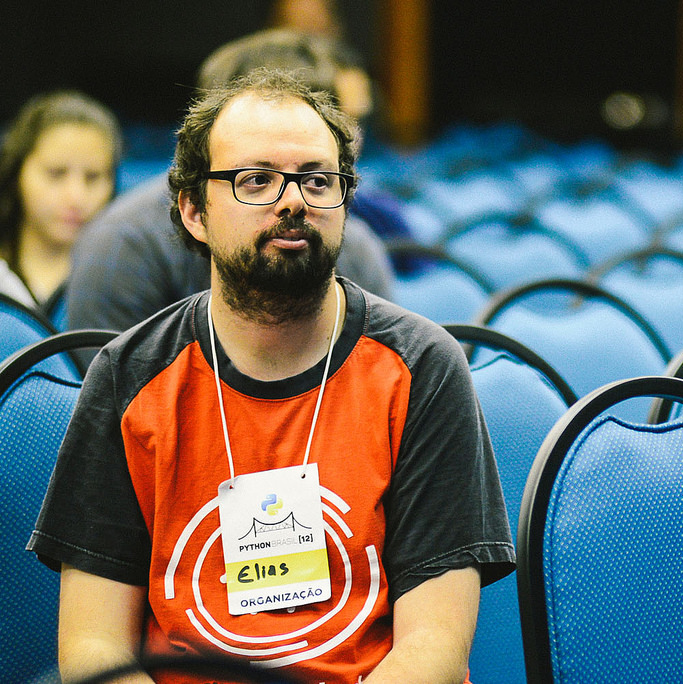

தேனீக் குழு¶
அப்படியானால், BeeWare (BeeWare) பின்னால் இருப்பவர்கள் யார்? பங்களிப்பாளர்கள் ஒரு பெரிய குழு உள்ளது, ஆனால் இந்தத் திட்டம் பீ டீம் (Bee Team) என்பவர்களால் நிர்வகிக்கப்படுகிறது.
தற்போதைய குழு உறுப்பினர்கள்¶
Russell Keith-Magee¶
டாக்டர் ரஸ்ஸல் கீத்-மேகி BeeWare திட்டத்தின் நிறுவனர் ஆவார். அவர் 2006-ல் ஜாங்கோ கோர் குழுவில் சேர்ந்தார், மேலும் 5 ஆண்டுகள் ஜாங்கோ மென்பொருள் அறக்கட்டளையின் தலைவராக இருந்தார். அவர் மே 2024 முதல் சிபைத்தன் கோர் குழுவில் உறுப்பினராக இருந்து வருகிறார்.
ரஸ்ஸல், அனகோண்டா-வில் உள்ள ஓப்பன் சோர்ஸ் குழுவில் ஒரு முதன்மை மென்பொருள் பொறியாளராக உள்ளார் (ஒரு BeeWare கோல்ட் ஆதரவாளர்).
Katie McLaughlin¶
கேட்டி பல ஆண்டுகளாகப் பலதரப்பட்ட பணிகளைச் செய்துள்ளார். அவர்கள் முன்னதாக பல மொழிகளுக்கான மென்பொருள் உருவாக்குநராகவும், பல இயக்க முறைமைகளுக்கான கணினி அமைப்பு நிர்வாகியாகவும், பலதரப்பட்ட தலைப்புகளில் பேச்சாளராகவும் இருந்துள்ளார்.
அவர்கள் உலகை மாற்றாத நேரங்களில், சமையல் செய்தல், திரைச்சீலைகள் செய்தல், மற்றும் பல்வேறு பயன்பாட்டுத் தொகுப்புகள் ஈமோஜிகளை எவ்வளவு நன்றாகக் கையாளுகின்றன என்பதைப் பார்ப்பதை ரசிக்கிறார்கள்.
Philip James¶
பிலிப் கணினிகளுக்காகவும் மனிதர்களுக்காகவும் குறியீடு எழுதுகிறார். பைத்தான் தான் அவரது முதல் கணினிப் பிரியம், ஆனால் பெரும்பாலும் ஜாவாஸ்கிரிப்ட் மற்றும் ஸ்விஃப்ட் எழுத நிர்பந்திக்கப்படுகிறார். அவர் பணம், திறந்த மூலத் திட்டங்கள் அல்லது தனது சொந்த விசித்திரமான திட்டங்களுக்காக குறியீடு எழுதாத நேரங்களில், மாநாடுகளில் உரைகள் ஆற்றுகிறார். பிலிப் தனது மனைவி மற்றும் அவரது பூனையுடன் கலிபோர்னியாவின்
Malcolm Smith¶
மால்கம், ஆண்ட்ராய்டு செயலிகளில் பைத்தானைப் பயன்படுத்துவதை முடிந்தவரை எளிதாக்க இலக்கு வைத்துள்ள சாக்வோபியின் உருவாக்குநர் ஆவார். பீவேயருடன், அவர் இப்போது அந்த இலக்கை அனைத்து டெஸ்க்டாப் மற்றும் மொபைல் தளங்களுக்கும் விரிவுபடுத்த ஆவலுடன் உள்ளார்.
மல்கம், அனகோண்டா-வில் உள்ள ஓப்பன் சோர்ஸ் குழுவில் ஒரு மூத்த மென்பொருள் பொறியாளர் ஆவார் (ஒரு பீவேயர் கோல்ட் ஆதரவாளர்).
Russell Martin¶
ரஸ்ஸல் ஒரு பொருட்களைச் சரிசெய்யும் ஆர்வலரும், படைக்க விரும்பும் ஒருவருமாவார். பல ஆண்டுகளுக்கு முன்பே அவர் பைத்தனில் காதல் கொண்டார், மேலும் அதனால் உருவாக்கப்பட்ட செயலிகளை எல்லா இடங்களிலும் காண விரும்புகிறார். அவர் குறியீடு எழுதாதபோது, விக்கிப்பீடியாவின் ஆழமான உலகில் மூழ்கியிருப்பார் அல்லது தனது பெரிதாக வளர்ந்த வீட்டு ஆய்வகத்தின் கணினி நிர்வாகியாகப் பணியாற்றுவார்.
Charles Whittington¶

ஒரு காமிக் கலைஞர், இயந்திரவியல் நிபுணர், வெல்டர், தச்சர் மற்றும் நிரலாளராக, சார்லஸ் பல பொறுப்புகளை ஏற்றுள்ளார் (ஆனால் பொதுவாக ஒரு பண்டானாவை அணிந்திருப்பார்). அவர்கள் பிழைப்புக்காக நாடக அரங்க அமைப்புகளை உருவாக்காதபோதோ அல்லது டோகா மற்றும் டிராவர்டினோ வழியாக யாக்ஸை துரத்தாதபோதோ, அவர்கள் தங்கள் வீட்டில் இன்னொரு அலமாரி அல்லது பிற சேமிப்பு அலகை உருவாக்கிக் கொண்டிருப்பார்கள்.
Kattni¶
கட்னி ஒரு படைப்பாளி, சமூகத் தலைவர், நிரலாளர், தொழில்நுட்ப எழுத்தாளர், உருவாக்குநர், புகைப்படக் கலைஞர், அவ்வப்போது சமையல் செய்பவர், பாரம்பரியப் பயிற்சி பெற்ற பாடகர், காற்றுத் தாவர வளர்ப்பாளர், மற்றும் இசைக்கருவிகள் மீது புதிய ஆர்வம் கொண்டவர். சமூகங்களை உருவாக்குவதிலும், கற்றுக்கொள்வதிலும், வழிகாட்டுவதிலும், மற்றும் தனது அறிவை எளிதில் அணுகக்கூடிய வகையில் பகிர்வதிலும் அவர் பேரார்வம் கொண்டவர். பொருட்களை ஒளிரும் மற்றும் பிரகாசமானதாக மாற்றுவதில் அவருக்கு எப்போதும் ஒரு சிறப்பு இடம் உண்டு. ஒரு பூனையும் மூன்று பூனைக்குட்டிகளும் அவளுடன் வாழ அனுமதித்து, அவளை சகித்துக்கொள்கின்றன.
Corran Webster¶
டாக்டர் கோரன் வெப்ஸ்டர் ஒரு கணிதவியலாளர், இவர் 90-களிலிருந்து பைத்தானில் வரைகலை பயனர் இடைமுகங்களை உருவாக்கி வருகிறார் மற்றும் பல ஆண்டுகளாக அறிவியல் பைத்தான் உலகில் தீவிரமாக ஈடுபட்டு வருகிறார், இதில் ஸைபை (SciPy) மாநாட்டின் இணைத் தலைவராகப் பணியாற்றியதும் அடங்கும். பல ஆண்டுகளாக அவரது பங்களிப்புகள் கல்வியாளர், தரவு விஞ்ஞானி, மென்பொருள் உருவாக்குநர், மேலாளர் முதல் திறந்த மூல ஹேக்கர் வரை நீண்டுள்ளன, ஆனால் எப்போதும் ஒரு ஆசிரியராகவும் வழிகாட்டியாகவும் இருக்கும் பொதுவான ஒரு இழக்குடன் செயல்பட்டு வருகிறார்.
காரன் யூனிட்டல் சாஃப்ட்வேர்-இன் நிறுவனர் மற்றும் முதன்மைப் பணியாளர் ஆவார், மேலும் அவர் டில்லர் டிஜிட்டல்-இல் அறிவியல் பைத்தானுக்கான பயிற்சிப் பாடநெறிகளில் பயிற்றுவிப்பாளராக உள்ளார். பைத்தான் குறியீடு எழுதாத நேரங்களில், அவர் சமையல் செய்கிறார், மைக்ரோகண்ட்ரோலர்கள் மற்றும் டி-கேஜ் ரயில்களுடன் நேரத்தைச் செலவிடுகிறார், மேலும் எந்நாளும் அந்த மலை மிதிவண்டியிலிருந்து சிலந்தி வலையைத் துடைத்துவிடுவார்.
முதுநிலைக் குழு உறுப்பினர்கள்¶
Chiang Fong Lee¶

மன அழுத்தத்தைக் குறைக்க குறியீட்டைத் திருத்துவதைத் தவிர்க்கும்போது, அவர் தனது நேரத்தை ஃபவுண்டன் பேனாக்கள் மற்றும் மெக்கானிக்கல் விசைப்பலகைகளைக் கையாள்வதில் செலவிடுகிறார். மை படிந்த விரல்களை அழகான விசைப்பலகை விசைகளுடன் கலக்கக் கூடாது என்ற பாடத்தை அவர் இன்னும் கற்றுக் கொள்ளவில்லை.
Elias Dorneles¶

எலியாஸ் ஒரு சான்றளிக்கப்பட்ட யாக்-ஷேவர். அவருக்கு பைத்தான் மற்றும் திறந்த மூல மென்பொருட்களைக் கொண்டு பரிசோதனை செய்வது பிடிக்கும். வீட்டில், அவருக்குப் படிப்பது, சமைப்பது மற்றும் தனது கிட்டாரில் பீட்டில்ஸ் பாடல்களை வாசிப்பது பிடிக்கும்.
எலியாஸ் தன் நண்பர்களின் உதவியுடன் சமாளித்துக்கொள்கிறான்.
Christopher Swenson¶
டாக்டர் கிறிஸ்டோபர் ஸ்வென்சன் ஒரு மென்பொருள் பொறியாளர், கணினி விஞ்ஞானி மற்றும் அவ்வப்போது கணிதவியலாளர் ஆவார். ஸ்வென்சன் சுமார் 2004 முதல் பைத்தானுடன் பணியாற்றி வருகிறார், மேலும் ஓப்பன் சோர்ஸ் என்றால் என்னவென்று தெரியும் முன்பிருந்தே அதில் ஈடுபட்டு வருகிறார். ஸ்வென்சனுக்கு வரிசைப்படுத்துவது மிகவும் பிடிக்கும், மேலும் அவர் ஓப்பன் சோர்ஸ் உயர் செயல்திறன் கொண்ட சி (C) வரிசைப்படுத்தல் நூலகத்தை பராமரிக்கிறார். ஸ்வென்சன், சிம்பிள், கூகுள் மற்றும் அமெரிக்க அரசாங்கம் போன்ற பெரிய மற்றும் சிறிய நிறுவனங்களுக்குத் தனது உழைப்பை விற்றுள்ளார், மேலும் குறியாக்கவியல் (cryptography) குறித்து ஒரு புத்தகத்தை எழுதியுள்ளார். ஸ்வென்சன் PyDX-இன் ஒரு அமைப்பாளர் ஆவார். ஸ்வென்சன் ஒரு கப் கேக்.
Dan Yeaw¶
டான், சிக்கலான வாகன மற்றும் இயக்கத்திறன் அமைப்புகளில் பாதுகாப்பை வடிவமைக்கக் குழுக்களுக்கு வழிநடத்துகிறார், மேலும் இந்த அமைப்புகளை மாதிரியாக்க BeeWare கருவிகளைப் பயன்படுத்துவதைக் கனவு காண்கிறார்.
டான் ஓப்பன் சோர்ஸ் திட்டங்களில் வேலை செய்யாதபோது, தனது குழந்தைகளுடன் நேரத்தைச் செலவிடவும், பீர் தயாரிக்கவும், கால்பந்து விளையாடவும் விரும்புகிறார்.
Olga Bulat¶
ஓல்கா ஒரு பைத்தான் மற்றும் BeeWare ஆர்வலர், மேலும்
அவள் குழந்தைகளுடன் நேரத்தைச் செலவிடுவதையும் விரும்புகிறாள்.
Sam Schott¶
சாம் ஒரு இயற்பியலாளர் மற்றும் மென்பொருள் பொறியாளர். ஆய்வகத்தில் தரவு சேகரிப்பைத் தானியக்கமாக்கியபோது அவர் பைத்தானை அறிந்து கொண்டார். மேலும், குறியீடுகளை எழுதுவதையும் பகிர்வதையும் அவர் விரும்புவதை விரைவில் உணர்ந்தார். கணினிக்கு விலகி இருக்கும்போது, அவரை ஆங்கிலக் கடற்கரையோரம் மலையேற்றம் செய்வதையோ அல்லது படகு ஓட்டுவதையோ காணலாம்.
Amber Brown¶
அம்பர் பிரவுன் இணையத்தில் ஒரு ஆந்தை போல நடிக்கிறார். அவர் ட்விஸ்ட்டை வெளியிடாதபோதும் அல்லது அதில் வேலை செய்யாதபோதும், பல்வேறு வணிக மற்றும் இலாப நோக்கற்ற நிறுவனங்களுக்கான மென்பொருளில் வேலை செய்கிறார். அவர் ட்விஸ்ட்டைப் பற்றி முடிவில்லாமல் பேசுவதில் மிகவும் திறமையானவர், அதனால் ரஸ்ஸல் ஒருமுறை அதைப் பற்றி முக்கிய உரை ஆற்றுமாறு அவரை அழைத்தார்.
மேலும், மக்கள் ஆந்தைகளின் படங்களை அவளுக்கு ட்வீட் செய்வதை அவள் விரும்புகிறாள்.
Charlotte Mays¶
சார்லட், தான் ஒப்புக்கொள்ள விரும்புவதை விட அதிக ஆண்டுகளாக கோடிங் செய்து வருகிறார், மேலும் அருமையான விஷயங்களை உருவாக்குவதிலும், மற்றவர்கள் அதை எப்படி உருவாக்குவது என்று கற்றுக்கொள்ள உதவுவதிலும் பேரார்வம் கொண்டவர். அவர் PyLadies